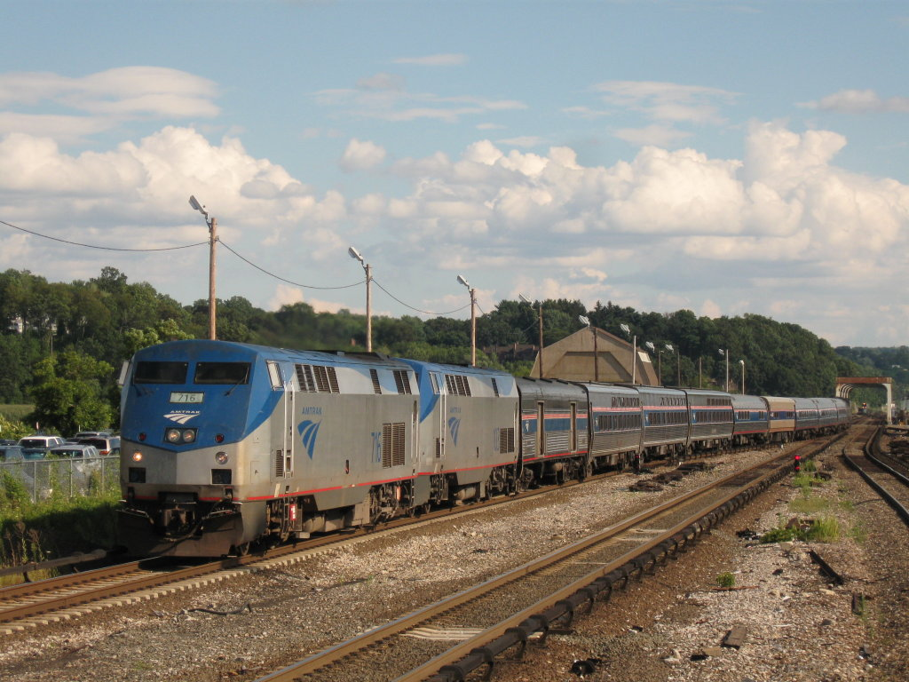
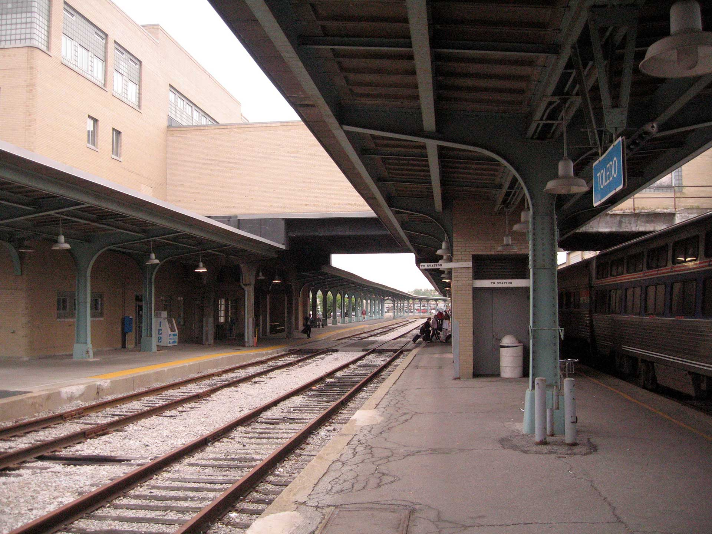

Or, I reconsider the Lake Shore Limited yet again, and find a use for it.
A frequent complaint about Amtrak service is that “you can’t get there from here,” and it’s a fair criticism. As a Michigan expatriate living on the East Coast I’m sensitive to these limitations. Michigan itself has comparatively good service: three Wolverines to Detroit/Pontiac, the Blue Water to Lansing and Port Huron, and the Pere Marquette to Grand Rapids. Unfortunately for me all three services pivot on Chicago. Coming from the East Coast, I’m facing hours of layovers and backtracking.
As an alternative, Amtrak offers a Thruway Motorcoach connection at Toledo to various destinations in Michigan. Thruway Motorcoachs are contracted buses which you can book with trains to help get you closer to your final destination. I’d resisted this option for years because of the timings in Toledo and general uncertainty about the whole enterprise. After a positive experience with an Amtrak bus in Florida in 2014 and a growing desire to avoid driving on I-80, I decided to take the plunge.
The trains

Amtrak has two trains serving Toledo, the Capitol Limited and the Lake Shore Limited. They are both long-distance trains running between Chicago and the East Coast; neither serves Toledo in daylight. The Capitol Limited runs southeast to Pittsburgh and Washington, D.C.; the Lake Shore Limited follows Lake Erie and serves New York City by way of Buffalo and Albany. I’ve previously written about the Lake Shore Limited but I do not come here to bury it (again).
The bus
Amtrak contracts with local bus operators to provide bus connections. Trinity Transportation handles the bus from Toledo. Westbound, the bus is scheduled to depart Toledo at 6:30 AM, or thirty minutes after the scheduled arrival of the Lake Shore Limited and ninety minutes after the Capitol Limited. It will be held, barring major disruptions, for both trains. Eastbound, the bus arrives in Toledo at 10:35 PM, or an hour before the scheduled departure of the Capitol Limited and four hours before the Lake Shore Limited.
The bus itself is of the modern intercity variety, with comfortable seats, a restroom, and free Wi-Fi. When I rode the bus it was close to full between Toledo and Detroit but half the people got on (or off) in Detroit.
The station

Toledo is an intermodal facility, serving Amtrak, intercity buses, and local buses. It’s expanded from a New York Central Railroad station built in the 1950s. The station is open during the wee hours of the morning when Amtrak’s long-distance trains come through. It’s well-lit and there are comfortable chairs to sit on. Amenities include restrooms, Pepsi machines, a snack machine, a coffee vending machine. There’s also a small Subway sandwich shop which is open until midnight.
Where you can go
The bus serves five destinations in Michigan:
- Detroit: the Amtrak station in the New Center neighborhood near Wayne State University.
- Dearborn: the new Amtrak and intermodal station.
- Ann Arbor: the Amtrak station along the river.
- Jackson: the Amtrak station in downtown Jackson.
- East Lansing: the new Amtrak and intermodal station off Troubridge.
I’ve done Ann Arbor and East Lansing; in both cases I needed to rent a car to complete my journey. There isn’t a car rental location near either station. In Ann Arbor there were taxis at the station; in East Lansing I needed to call one. The East Lansing station closes at 6 PM, an hour before the scheduled departure of the bus, but there’s an enclosed waiting area which stays open and which has not-entirely-uncomfortable seating.
Game planning
This is the itinerary I employed over the Christmas holidays:
Outbound
- 3:40 PM (Day 1): Depart New York on the Lake Shore Limited
- 5:55 AM (Day 2): Arrive in Toledo
- 6:30 AM: Depart Toledo on the bus
- 10:05 AM: Arrive in East Lansing
Inbound
- 7:00 PM (Day 1): Depart East Lansing on the bus
- 10:35 PM: Arrive in Toledo
- 11:49 PM: Depart Toledo on the Capitol Limited
- 1:05 PM (Day 2): Arrive in Washington, D.C.
- 3:05 PM: Depart Washington, D.C. on the Northeast Regional
- 6:30 PM: Arrive in New York
The choice of the Capitol Limited on the return eliminates an extra three hours layover in Toledo while not materially altering the arrival time in New York. Another option is to change to the Pennsylvanian in Pittsburgh but that makes for an early morning after a late night.
The big consideration here is meals. Unless the Lake Shore Limited is very late you’re missing breakfast westbound, and you’re definitely missing dinner eastbound. Assuming a big dinner the night before, missing breakfast is tolerable, but I suggest bringing along some granola bars or some such. Eastbound, the Subway at the Toledo station is a godsend.
Alternatives
A big theme in my travel writing and planning is resiliency: I want above all to maximize my options while controlling costs. I considered bypassing Toledo and the bus altogether in favor of South Bend, Indiana. South Bend is roughly the same driving distance from the places I would drive to in Michigan. With South Bend I had to weigh the following considerations:
- South Bend is 2 1/2 hours west of Toledo. Westbound that’s more time to sleep and gets you breakfast on board, but also adds that to your final ETA. Eastbound you still miss dinner and have to meet the train that much earlier.
- How do rental car prices at South Bend compare to the rental car prices in Michigan? What are the hours of the facility?
- How is taxi service in South Bend? How does Uber/Lyft availability compare to Ann Arbor or Lansing?
- If I encounter problems in South Bend, what are my fallback options? Is there a bus? Do I know someone who can pick me up?
These same factors applied to all the Michigan locations. I selected East Lansing because of rental car price, timing, and proximity to my final destination.
The verdict
This works as a travel option between the East Coast and mid-Michigan. Door to door it takes about the same amount of time as driving the whole way with an overnight stay, and can be price-competitive under the right conditions. It also eliminates someone sitting behind the wheel for 630 miles, and that has to be worth something.